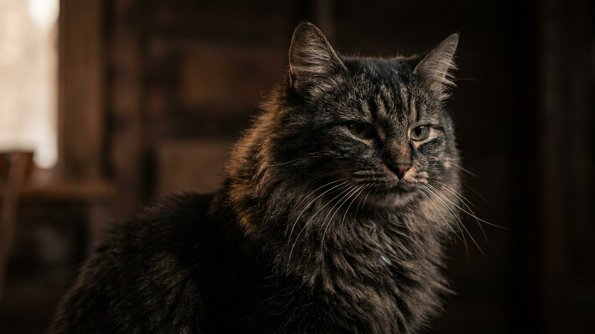

Миттельшнауцера берут за брутальную бороду и удобный средний размер — такого легко представить в квартире. Но под бородой прячется служебная собака с головой, которой двух прогулок «по кругу» откровенно мало: заскучавший миттель придумает себе работу сам, обычно из ваших вещей. Ниже — сколько нагрузки нужно на самом деле, как ухаживать за жёсткой шерстью и кому эта порода правда подойдёт.
🐾 Ваш питомец — миттельшнауцер?
Заведите профиль в AnimaLife: приложение запомнит породу, возраст и вес и будет подсказывать по уходу именно для неё. Вопросы AI-ветеринару — круглосуточно и бесплатно.
Завести профиль → Завести в MAX →
У вас iPhone? AnimaLife есть в App Store
Стандартный шнауцер — прародитель всей тройки (цвергшнауцер и ризеншнауцер выведены от него). Столетиями это была фермерская собака: крысолов на конюшне, сторож двора и повозок. Отсюда и темперамент — смышлёный, бдительный, самостоятельный и очень «включённый» в происходящее.
Практический вывод: миттель хочет не просто двигаться, а участвовать. Он мониторит двор, реагирует на звонок и чужих, легко учится — и так же легко находит себе занятие, если его этим умом никто не занял.
Бдительность даёт и оборотную сторону — склонность облаивать «нарушителей границы». Ранняя социализация (люди, звуки, другие собаки) и спокойная реакция хозяина на звонок в дверь помогают держать этот сторожевой пыл в разумных рамках.
Средний шнауцер — собака выносливая. Одних неспешных прогулок ему не хватает: нужна и физическая, и умственная нагрузка.
Признак, что нагрузки мало, — лай на каждый шорох, погрызенные вещи, «дурашливые» гонки по квартире вечером. Это не вредность, а нерастраченная энергия.
Шерсть у породы жёсткая, проволочная, и почти не линяет — но требует своего ухода. Классика для выставочной ости — тримминг (выщипывание отмершего волоса) примерно раз в 2–4 месяца; домашних питомцев часто стригут машинкой, тогда шерсть мягчает и тускнеет, но живётся проще.
Миттельшнауцер — отличный выбор для активной семьи или человека, готового давать собаке дело: спорт, дрессировку, долгие насыщенные прогулки. Он привязчив, вынослив, хорошо ладит с детьми, которых знает, и прекрасно живёт в квартире — если выгуливается по-настоящему.
Не лучший вариант, если вы ищете спокойного «диванного» компаньона, редко бываете дома или не любите повторять правила. Скучающий миттель становится шумным и упрямым — и это претензия к режиму, а не к породе.
🐾 У вас миттельшнауцер?
AnimaLife соберёт уход под породу: к каким болезням есть склонность, что проверять по возрасту, чем кормить и когда пора к врачу. Бесплатно, прямо в мессенджере.
Собрать план ухода → Собрать в MAX →
У вас iPhone? AnimaLife есть в App Store
🐾 Понравился разбор?
Подпишитесь на канал — каждый день разбираем по одному тревожному симптому у кошек и собак: что в пределах нормы, а когда пора к врачу. Подпишитесь, чтобы не пропустить разбор, который может спасти здоровье вашего питомца.